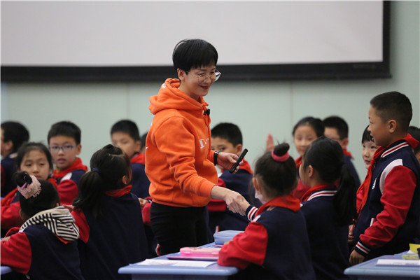
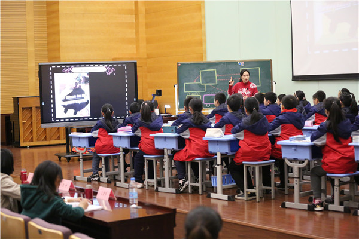
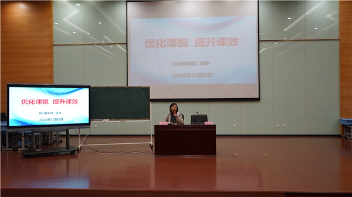
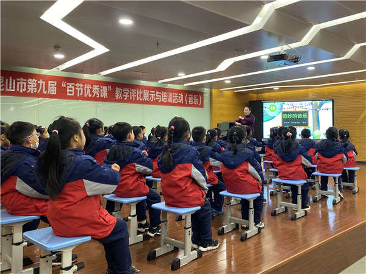
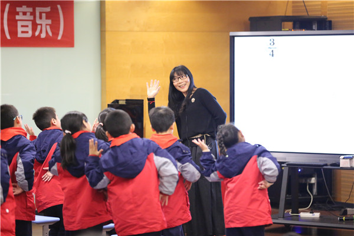
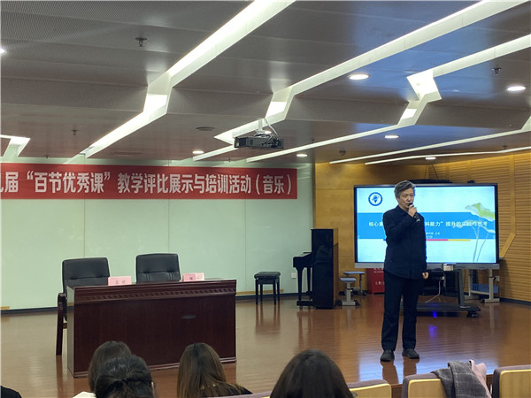
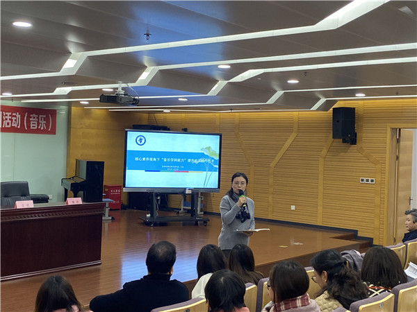
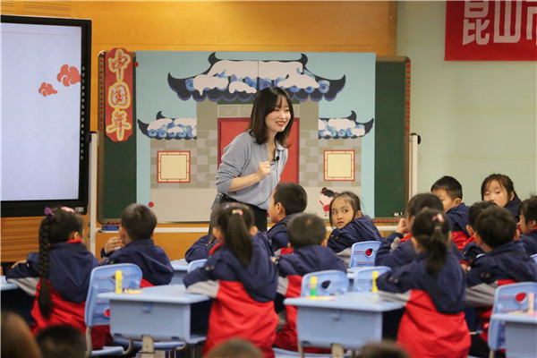
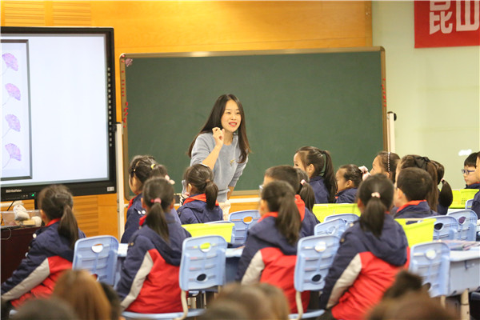
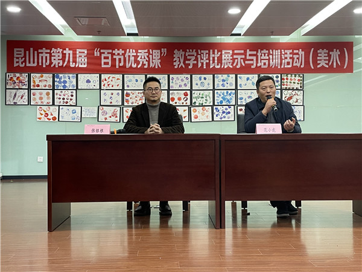

鞍山市铁东区胜利小学欢迎您！
首页 > 详情信息
12月2日，第九届中小学（小学）“百节优秀课”教学评比展示与培训活动（英语、音乐、美术）在鞍山市铁东区胜利小学西校区举行。苏州市教研员袁峥、王欢、范小虎，教研员刘青、陈平、张银根以及小学英语、音乐、美术教师500多人参加活动。
优化课貌，提升课效
——第九届“百节优秀课”教学评比展示与培训活动(英语）
本次活动，3位骨干教师开设示范课。
震川小学的袁懿芳老师执教3A 《Unit5 Look at me》复习板块。袁老师从复习板块开始，同时包含低年级的衣物类、颜色类单词，扩充学生的语言支架。这节复习课结合新旧知识点和语言点，实现复习课提升和拓展相结合。袁老师的课设计巧妙，整节课根据主题意义进行语境贯通，在语境中锻炼学生的综合语用能力。
玉峰实验小学的王誉芳老师执教4A 《Unit5 Our new home》复习板块。王老师的课连贯紧凑，各个教学环节设计紧紧围绕目标展开，并在不同的目标中展开语言的训练。王老师在原有教学知识的基础上拓展了内容，开拓了学生的思维，为学生的语言输出打下扎实的基础。
朝阳小学的徐洁洁老师执教绘本《We want to be superman》。徐老师以感知绘本导入，引导学生在品悟绘本趣味的同时进行语言的再构，发展学生综合运用语言的能力。徐老师在细节的把握与处理上非常细致，通过图片对比、动画等形象的方式帮助学生掌握单词、理解文本，从而体悟文本魅力。
展示课后，苏州市教科院袁峥老师进行了评课研讨。袁老师结合课堂生成情况进行了点评与反思。袁老师认为，单元复习课可以是基于复习主题的板块整合，可以是鉴于主题意义的语境贯通，或是源于单元话题的内容融合，应有始于学生语力的语言拓展。袁老师认为，复习课应关注问题，避免“明知故问”；关注语音，提升习词能力。同时提倡板书多用手写，提升教师的基本功。



精彩聆听，培育心中的芳草园
——第九届“百节优秀课”教学评比展示与培训活动(音乐）
12月2日，第九届中小学（小学）课堂教学“百节优秀课”展示活动（音乐）在鞍山市铁东区胜利小学举行。本次活动精彩纷呈，惊喜连连，给与会的师生留下了深刻的印象和无尽的思考。
对于一年级的同学，高科园小学的厉莹老师分享的是 “交响曲之父”约瑟夫·海顿的《惊愕交响曲》。借由这首交响乐的起伏变化，厉莹老师带领同学们一起感受了音乐的神秘感,从熟悉音乐到学唱歌谱、感受音乐，在轻松愉悦的氛围下，用灵活多样的方式，让学生体验了音乐的强弱变化，美妙悦动，发现了一个多彩趣味的音乐世界。
二年级同学，在鞍山市铁东区胜利小学的范红芳老师的带领下，学习了优美动听的歌曲——《小雪花》。闭眼感受，灵动可爱的雪花就在眼前；纯净美好的歌声，回荡整个会场。美丽端庄的范老师，用亲切温和的声音，引领着孩子们徜徉于浓浓的艺术海洋里，用潜移默化、循序渐进的教学方式，促进了同学们的有效聆听和科学演唱的习惯养成。老师们被真善美小世界感动，为理想境界所吸引。
最后，苏州教科院王欢教授，给教师们进行了一场《核心素养视角下“音乐学科能力”提升的实践与思考》的讲座。从分享故事开始，以音乐学科能力为核心，传达了平凡朴实的教学理念，点评了生机盎然的课堂实例，引起老师们深深的思考：“审美感知素养”、“艺术表现素养”、“文化理解素养”，将是我们一线音乐教师为之培养和努力的方向！




构建主题化美术教学 打造高品质智慧课堂
——第九届“百节优秀课”教学评比展示与培训活动(美术）
本次活动分两个议程：一是实验小学王焱老师和石予小学陈美娜老师分别执教了两节美术公开课；二是苏州教科院范小虎老师做《落实核心素养，践行适合的美术教育》的专题报告。
王老师执教的《欢乐中国年》一课，无论是从教学内容、教学设计还是组织形式上都体现了新颖的教学理念。王老师创设“王家老宅”的中国年文化情境，精美的板书和教具，激发了学生们的学习兴趣，营造出了欢乐喜庆的课堂氛围。学生们通过关于“神秘礼包”的一系列教学环节了解到了中国年的习俗、历史与文化。整节课内容丰富、环节连贯，学生们体验到学习与创作的乐趣。
陈老师执教的《我们身边的痕迹》一课，从教学的内容和表现形式方面无一不紧扣“身边”二字，贴近学生的生活。陈老师以多样美观且熟悉的图片引导学生观察分析，了解痕迹拓印的方法与步骤。整节课教学环节完整丰富，学生们不仅学会了发现身边的痕迹美，也学会了运用痕迹去创造美。
教师发展中心研训员张银根老师主持了本次活动的评课研讨，首先两位上课老师对自己执教的课题进行了教学设计思路的分享。张老师说：“教与学是种融合，教学中要以学生为本。”同时也肯定两位老师的教育机智与德育渗透的教育理念。
苏州教科院范小虎老师就两位老师的课也作了总结与分享：王老师的教学设计最大的亮点就是丰富的文化情境的创设，将画、剪作为整节课的主线，非常精彩。陈老师的课准备很充分，环节设计紧凑有序。通过她的引导，孩子们不仅体验到了拓印的乐趣，也学会了利用身边痕迹去创造美。两节课都十分优秀，展现了美术教师精湛的业务能力。


